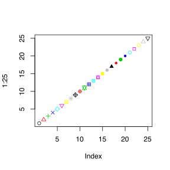

Во избежание последующих проблем, советую ставить в папку “C:\R” (чтобы гарантированно в пути к файлам не было ни пробелов, ни русских букв). Остальные пункты установки - по умолчанию.
R-tools последней версии (Windows, MacOS (clang, gfortran))Во избежание последующих проблем, советую ставить в папку “C:\Rtools” (чтобы гарантированно в пути к файлам не было ни пробелов, ни русских букв). Остальные пункты установки - по умолчанию.
RStudio последней версии для своей операционной системы (Windows/MacOS) > Во избежание последующих проблем, советую ставить в папку “C:\RStudio” (чтобы гарантированно в пути к файлам не было ни пробелов, ни русских букв). Остальные пункты установки - по умолчанию.В результате указанных действий у Вас должна оказаться установленной на компьютере статистическая среда R и удобный интерфейс к ней RStudio. Вообще говоря, установка RStudio не является обязательным условием (если компьютер очень тормозит - она может вносить свой вклад), но работа в ней значительно удобнее.
Для того, чтобы установить необходимые пакеты (см. ниже), Вам потребуется запустить RStudio (или R) и далее вводить ниже указанные комманды в консоли.
echo "export LANG=en_US.UTF-8" >> ~/.bashrc && echo "export LC_ALL=en_US.UTF-8" >> ~/.bashrc && source ~/.bashrcЕще, если жалуется на отсутствие gfortran, решение для MacOS (если R-tools не поможет)
/usr/bin/ruby -e "$(curl -fsSL https://raw.githubusercontent.com/Homebrew/install/master/install)"
brew install gcc # (gcc49, если старый mac)Или тут еще есть ряд советов (https://thecoatlessprofessor.com/programming/)
Есть два основных источника пакетов в R:
CRAN - это основная коллекция пакетов, для установки которых нужно выполнить комманду
install.package('package_name')Github - это хранилище дополнительных пакетов от различных разработчиков (там же хранятся последние версии, еще не вошедшие в CRAN). Чтобы установить пакеты оттуда нужно выполнить комманду
devtools::install_github('author/package_name')Для установки необходимых пакетов нужно выполнить следующий код
install.packages( c("Amelia", "boot", "broom", "car", "caret", "corrplot", "cowplot", "curl", "devtools", "esquisse", "furrr", "gdtools", "GGally", "ggforce", "ggplot2", "ggpubr", "ggrepel", "ggridges", "ggstance", "ggthemes", "glue", "gridExtra", "gtools", "hexbin", "httr", "investr", "jsonlite", "kableExtra", "knitr", "lme4", "lmtest", "lubridate", "magrittr", "mice", "missForest", "modelr", "mvtnorm", "naniar", "officer", "openxlsx", "plotly", "prettydoc", "profvis", "purrr", "randomForest", "readr", "readxl", "repr", "reprex", "reshape", "reshape2", "rio", "rmarkdown", "rvest", "rvg", "sandwich", "scales", "selectr", "shiny", "sinaplot", "sjPlot", "tidyverse", "multcomp", "drc", "RColorBrewer", "nlme", "ipred", "effsize", "dunn.test", "remedy", "ggalt", "ggExtra", "gsheet", "jtools"), dependencies = TRUE )
devtools::install_github( c("thomasp85/patchwork", "r-lib/crayon", "kassambara/rstatix"), upgrade = "never", dependencies = TRUE )Для упрощения процедуры, а также для возможности проверки успешности установки я написал скрипт, который все делает и печатает результат.
source('http://tiny.cc/lpt_rpkgs')
build_list()
print_pkg_list()
install_pkgs()
installation_report()Пакеты для Windows устанавливаются в уже скомпилированном виде, поэтому это происходит быстро, а вот пакеты для Mac устанавливаются из “исходников”. Поэтому может быть удобнее для этого использовать установщик conda.
conda (см. инструкцию)conda config --env --append channels r
conda config --env --append channels conda-forgeconda install r-amelia r-caret r-corrplot r-devtools r-esquisse r-furrr r-ggally r-ggforce r-ggpubr r-ggridges r-ggstance r-investr r-kableextra r-lmtest r-mice r-missforest r-naniar r-prettydoc r-profvis r-repr r-rvg r-sinaplot r-sjplot r-tidyverse r-drc r-caret r-ipred r-effsize r-dunn.test r-remedy r-ggalt r-ggextra r-gsheet r-jtoolsЗамечательной особенностью R является то, что, в общем-то, его не надо и устанавливать. Есть несколько способов его использовать online (однако на наших занятиях на это рассчитывать не стоит, ибо в комнате не ловит WiFi).
1 + 1[1] 22^4[1] 16sqrt(log(abs(-2)))[1] 0.8325546library(tidyverse)
-2 %>% abs() %>% log() %>% sqrt()[1] 0.8325546plot(1:25, pch=1:25, col=1:25)